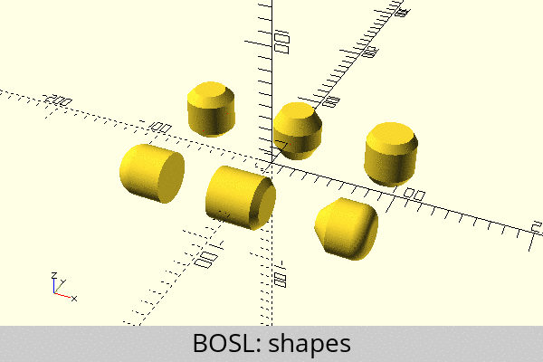
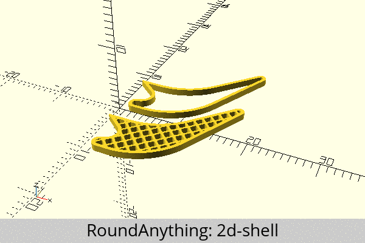
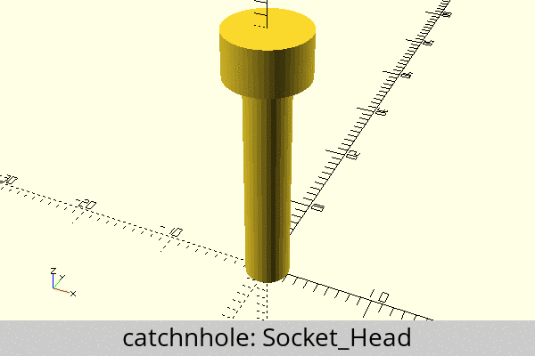

General
BOSL
The Belfry OpenScad Library - A library of tools, shapes, and helpers to make OpenScad easier to use.
- Library
- Documentation
- License: BSD-2-Clause
BOSL2 (beta)
Belfry OpenScad Library v2 - A library of tools, shapes, and helpers to make OpenScad easier to use.
- Library
- Documentation
- Tutorials
- License: BSD-2-Clause
dotSCAD
Reduce the burden of 3D modeling in mathematics.
- Library
- Documentation
- License: LGPL-3.0-only

NopSCADlib
An ever expanding library of parts modelled in OpenSCAD useful for 3D printers and enclosures for electronics, etc.
- Library
- Documentation
- License: GPL-3.0-or-later
UB.scad
This library is a full 3D printing workflow solution for OpenSCAD, bringing tools for modifying and generating 3D objects, view helpers and a selection of mechanical parts.
- Library
- Documentation
- License: CC0-1.0
Functional OpenSCAD
Implementing OpenSCAD in OpenSCAD.
- Library
- Documentation
- License: MIT

Constructive Library
Extends OpenScad Language for complex and complementary mechanical parts with less mathematical code. Offers a "Stamping" approach to quickly create mechanical parts fitting and complementing one another. This is used as a replacement for Constraints known form other CAD systems.
- Library
- Documentation
- Tutorials: Basics, Part II, Part III
- License: GPL-2.0-only
StoneAgeLib
StoneAgeLib - All sorts of scripts for OpenSCAD. The scripts are for 3D models for 3D printing.
An important aspect of this library is the CC0 (Public Domain) license.
This library is for a OpenSCAD version of at least 2025 with the features turned on and using "Manifold".
- Library
- Documentation
- License: CC0-1.0

BOLTS
BOLTS is an Open Library of Technical Specifications.
- Library
- Documentation
- License: LGPL-2.1-or-later | GPL-3.0-only
Asset Collection
A collection of OpenSCAD Scripts. There are some mechanical parts, as well as furniture and models that can be used as base mesh for 3D animations and game design.
- Library
- Documentation
- License: MIT
Single Topic
Round Anything
Round-Anything is primarily a set of OpenSCAD utilities that help with rounding parts, but it also embodies a robust approach to developing OpenSCAD parts.
- Library
- Overview - A pragmatic approach to OpenSCAD design
- Documentation - API reference and examples
- License: MIT
Mark's Enclosure Helper
A script for generating a two piece hinged box, with rounded corners, lid, interlocking rims, snap fit, magnet, or screw closures, and easy places for adding cutouts or additions to any face..
- Library
- Documentation
- License: GPL-3.0-only
funcutils
This library is a collection of OpenSCAD functions for use with the function-literals feature. It is meant to provide algorithms and tools to help build efficient scripts using functional programming techniques in OpenSCAD.
- Library
- Documentation
- License: CC0-1.0
OpenSCAD threads.scad Module
This is an efficient OpenSCAD threading library intended primarily to be used as a component in other designs. It supports metric compatible internal and external threads, auger threads, thread tapering, clearance holes, countersunk holes, recessed holes, hex bolts, nuts, washers, Phillips tips, and long rods which are extended with threaded joints. Whenever possible this complies with metric standards for the defaults of parameters, while providing overrides for many values.
- Library
- Documentation
- License: CC0-1.0

OpenSCAD Smooth Primitives Library
This library is a collection of some smooth primitives, i.e. having specified rounded edges, for use in other designs. It's not a comprehensive collection, but a useful set.
- Library
- Documentation
- License: CC0-1.0
OpenSCAD Function Plotting Library
This is a general purpose function plotting library for OpenSCAD which will render functions with Cartesian coordinates (x & y input, z output), polar/cylindrical coordinates (r & angle input, z output), or axial coordinates (z & angle input, r output). This library is sufficiently flexible that it can be used for more than just plotting functions. As demonstrated in the included demo files, this can efficiently render ordinary objects with surfaces defined by mathematical functions.
- Library
- Documentation
- License: CC0-1.0
OpenSCAD ClosePoints Library
This is a general purpose OpenSCAD library for easily creating diverse shapes by simply creating lists of points which trace out layers in an outline of the desired shape. The library consists of modules for creating polyhedrons from these lists of points, as well as functions to assist in specifying the points using transformations.
- Library
- Documentation
- License: CC0-1.0

Tray Library
Allows the design of trays with optional subdivisions. Many different configuration options available. Designed to quickly create trays with different configurations, for efficient storing of parts, such as hardware, small tools, board game inserts, etc..
- Library
- Documentation
- License: LGPL-3.0-or-later
Yet Another Parametric Projectbox generator
A generator for electronic project boxes, based on a definition of a PCB and lots of options for defining PCB standoffs and case cutouts.
- Library
- Documentation
- License: MIT
STEMFIE Parts Library
OpenSCAD library to create parts for the STEMFIE project.
STEMFIE is a free educational construction-set toy you can download and make at home using a 3D printer. Each component is a part of a mechanical ecosystem of compatible shapes designed to interlock through various connections and fasteners.
Catch'n'Hole
An ergonomic way to create nutcatches, screw holes and countersinks in OpenSCAD.
- Library
- Documentation
- License: MIT
Pathbuilder
A fast way to create complex 2D shapes with fillets and chamfers using SVG syntax. Supports the full SVG syntax.
- Library
- Documentation
- Wiki
- License: MIT
Altair's 2D Library for OpenSCAD
A library of useful functions, modules and constants for 2D drawing in OpenSCAD.
- Library
- Documentation
- License: MIT